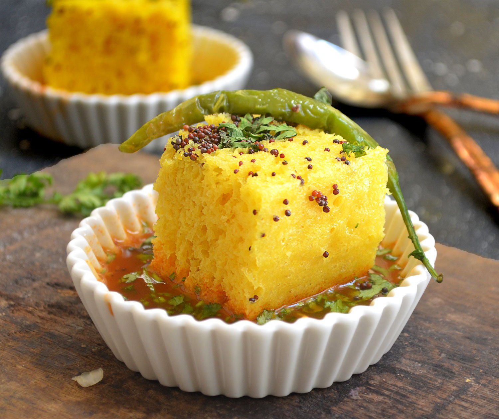

Dhokla Recipe

Ingredients
- 1 cup gram flour (besan)
- 1 cup yogurt
- 1 teaspoon ginger-green chili paste
- 1 teaspoon turmeric powder
- 1 teaspoon Eno fruit salt (or baking soda)
- Salt to taste
- 1 tablespoon oil
- 1 teaspoon mustard seeds
- Fresh coriander leaves for garnish
- Chopped green chilies for garnish (optional)
Instructions
- In a mixing bowl, combine gram flour, yogurt, ginger-green chili paste, turmeric powder, and salt. Mix well to form a smooth batter.
- Add water as needed to achieve a pouring consistency.
- Grease a steaming dish and pour the batter into it.
- Add Eno fruit salt and mix quickly. The batter will start to bubble.
- Immediately place the dish in a steamer and steam for about 15-20 minutes.
- Check doneness by inserting a toothpick; it should come out clean.
- Once done, let it cool for a few minutes and cut into squares.
- In a small pan, heat oil and add mustard seeds. Let them splutter, then pour over the dhokla pieces.
- Garnish with chopped coriander and green chilies (if using).
- Serve with green chutney or sweet chutney.